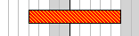
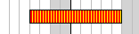
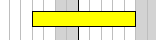
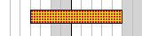
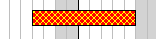
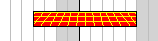
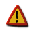
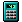

Gantt charts are used to give an easy overview of the extension in time of one or several activities (possible grouped). In addition the gantt chart can show an ordinal relation between one or several activities such as "activity A needs to be finished before activity B can start".
The shape of each activity can also be adjusted as well as color and size. Some of the capabilities of the Gantt module in the library are listed below.
-
Overall gantt graph features
-
Visualization of constraints between activities, start-to-start, start-to-end, end-to-start and end-to-end
-
Unlimited number of activities (up to memory and time constrains of PHP)
-
Full support for independent CSIM for both labels and activity bars
-
Support for visualization of grouped activities
-
Gantt charts can be automatically sized according to the number of bars and scale used.
-
Supports title and subtitle with user specified font, size and color
-
Supports vertical marker lines with text
-
Full support for CSIM (or drill down graphs)
-
Alternate row colors
-
-
Scale features
-
Both automatic and fully automatic scale
-
Flexible scale with options to display up to 6 lines of scale headers (year,month,week,day,hour,minute)
-
Supports platform independent Week number calculation according to ISO:8601
-
Scales grids are intelligent not to overwrite smaller resolution scales
-
Scale headers can be localized
-
Full user configurable scales
-
Each scale header is configurable in terms of font, size, color, background, grid lines etc.
-
-
Activity bars
-
can have multiple patterns and colors
-
can have progress indicators
-
can have drop shadow
-
titles can have individual fonts, colors and backgrounds
-
can have captions
-
can have specified left- and right end markers
-
heights can be specified in absolute pixels or in percent of the activity line width
-
-
Milestones
-
can have user selectable shape and color
-
titles can have individual fonts, colors and backgrounds
-
can have captions
-
An example of a small Gantt chart is shown in Figure 16.53. A typical small Gantt chart ( ganttmonthyearex2.php)
The remainder of this section will be used to discuss most of the formatting options for Gantt charts.
Note
There is one restrictions of the date scale and that is that it cannot have any "holes" the dates must be continues.
To understand the terminology used for Gantt chart Figure 16.54. Building block of a Gantt chart shows a typical chart with indications of the name of each main building block of the chart.
In addition to the specific Gantt formatting that will be discussed in the following sections all the previously explained graph embellishment like the options of adding texts, icons, changing font and color of titles, adding footers etc. are also available for Gantt charts.
A Gantt chart is made up of four distinct areas:
-
On the left side there is the activity title column.
-
On the top there is the scale headers (up to six headers may be displayed)
-
The actual plot area where all the activity Gantt bars and markers are placed
-
The margin area, where for example the titles are shown
The steps to crate a Gantt charts is similar to creating a cartesian plot. First an
instance of the main graph canvas is created (as an instance of class
GanttGraph) and then one or more "plots" are created an added to the graph.
For Gantt graph the "plots" that can be added are typically
-
Activity bars (we will also use the name Gantt bars as synonym) that indicates the length (and possible progress) of one activity. An activity bar is created as an instance of
class GanttBar -
Milestone marks, this can be thought of as a special activity bar with length = 0 and is often used to indicate a milestone or a deadline in the Gantt chart. A milestone is created as an instance of
class Milestone -
A phase divider, this is a vertical line that can be added at specific dates and is often used to mark then end and beginning of phases i a project. A divider is created as an instance of
class GanttVLine(for Gantt Vertical Line) -
A background pattern for a specific date range, this is often used to indicate holidays, public holidays or periods of special interest in the project
-
An arbitrary icon, this is either a predefined image or one of the built in markers in the library. This is created as an instance of
class IconImage
All these objects may be extensively modified in terms of formatting., colors (both fill- and frame color), size, titles, style and patterns etc. All objects have basic default values so it is not strictly speaking necessary to adjust them. However, the basic default values will give the charts a very simple look.
In order to create a Gantt graph the module "jpgraph_gantt.php"
must be included together with the core module "jpgraph.php"
A Gantt graph is created as an instance of class GanttGraph which
inherits much of the same formatting options available for standard x-y graphs, for
example titles, backgrounds, adding icons, adding texts and so on.
There is one crucial difference between all the other graph types and Gantt charts and that is the fact that for all other graphs both the height and width of the graph must be specified. For Gantt graphs this is not true.
Gantt graphs can be either
-
fully automatically sized
-
have the width specified but the height automatically determined by the number of activities added to the graph
-
fully specified with both width and height
This means that all the following gantt graph creations are valid
1 2 3 4 5 6 7 8 9 10 | // Fully automatic $ganttgraph = new GanttGraph(); // Semi automatic (automatically determined height) $ganttgraph = new GanttGraph(800); // Fully manual $ganttgraph = new GanttGraph(800,500); |
Note
If the specified width and height is too small to have room for all the activities specified the activities will be clipped to the specified date range.
The creation of a full Gantt graph follows the now familiar pattern of
-
Create the graph (as shown above) and specify the overall formatting options (e.g. titles, colors etc)
-
Create the plot objects that should be added to the graph (e.g. activity bars, milestones, icons, texts etc) and format them as wanted
-
Add the object to the graph, with a call to
GanttGraph::Add(), i.e. the activities, milestones etc. -
Send the graph back to the client or save it directly to a file, with a call to
GanttGraph::Stroke()
Note
Even though there is no limit for the size of the Gantt chart (apart from
available memory and execution time limit specified in
"php.ini") the library defines two constants
MAX_GANTTIMG_SIZE_W and MAX_GANTTIMG_SIZE_H that sets
the maximum allowed image size for a Gantt chart. This is primarily meant to
discover scripts gone wrong that tries to make very large images (perhaps by some
non-properly terminating loops). If the overall image size becomes larger than these
limit an error message will be shown.
A gantt chart must always have at least one scale header and at most six scale headers (see Figure 16.54. Building block of a Gantt chart). Usually it is not advisable to use more than three scale headers at the same time. Having multiple scale headers allow the specification of the same date range but with different resolutions.
The library makes six different scale headers available which is identified by a symbolic constant that is logically combined to specify the wanted headers using the method
-
GanttGraph::ShowHeaders($aHeaderSelection)
The $aHeaderSelection argument is a binary combination of one or more of
the following specifiers that indicates the interval used in the header
-
GANTT_HMIN, Minute interval header (See Minute scale for label format options)
-
GANTT_HHOUR, Hour interval header (See Hour scale for label format options)
-
GANTT_HDAY, Day interval header (See Day scale for label format options)
-
GANTT_HWEEK, Week interval header (See Week scale for label format options)
-
GANTT_HMONTH, Month interval header (See Month scale for label format options)
-
GANTT_HYEAR, Year interval header (See Year scale for label format options)
For example to show a year, month and week header the following line would be used
1 | $graph->ShowHeaders( GANTT_HYEAR | GANTT_HMONTH | GANTT_HWEEK ); |
Any combination of the listed headers above can be used. The scale headers will always be drawn with the larger header rage on top ot a header with smaller range.
Scale headers week, day, hour , minute have a minimum span of 1 unit. This means that if, for example, the week header is displayed the minimum width of the overall scale is one week.
Caution
The overall minimum size of the scale regardless of what scale headers are displayed is one day. This means that it is not possible to just create a Gantt graph with , say 6 hour.
Specifying the wanted headers is the first step in controlling the header. The next step is to specify the format that should be used to print the date label in each of the selected headers. For example the week interval header will have a label at the start of every week. This could for example be indicated as week number, day of month, full date and so on. In order to adjust the headers the appropriate header instance variable must be access. The header instance variables are
-
Graph::scale::minute -
Graph::scale::hour -
Graph::scale::day -
Graph::scale::week -
Graph::scale::month -
Graph::scale::year
The connection with the scale headers are shown in Figure 16.55. The Gantt scale properties which shows a cut out part of a larger gantt chart
All the headers are an instance of class HeaderProperty and supports the
following formatting methods
-
HeaderProperty::SetFont($aFontFamily,$aFontStyle,$aFontSize)Specify the font to be used for the label
-
HeaderProperty::SetFontColor($aColor)Specify the font color to use
-
HeaderProperty::SetStyle($aStyle)The style depends on the actual header and all available styles for each header are shown below. The style specifies the format used for the scale header label
-
HeaderProperty::SetBackgroundColor($aColor)Set the header background color
-
HeaderProperty::SetFrameWeight($aWeight)Specify the weight of the frame around the scale header
-
HeaderProperty::SetTitleVertMargin($aMargin)Specifies the margin between this header and the next header (usually there is no need to adjust this)
-
HeaderProperty::SetInterval($aInterval)Specifies the interval between each scale label. For example specifying
1
$graph->scale->hour->SetInterval(6);Will step the hour label 6 hours for each label
So for example to set the font of the month header the following line would be used
1 | $ganttgraph->scale->month->SetFont(FF_ARIAL,FS_NORMAL,10); |
In addition to these methods each scale also has the property '$grid'
which determines the appearance of grid lines for that specific scale. It is possible to
adjust the appearance of the grid lines by the "normal" line methods, i.e.
-
SetColor($aColor), Set the grid color -
SetWeight($aWeight), Set the grid line weight -
SetStyle($aLineStyle), Set the grid line style, i.e. "solid", "dotted", "dashed", "long-dashed" -
Show($aFlg=true), Enable the grid line
So for example to enable the week grid line and set it to red color the following lines would be needed
1 2 | $graph->scale->week->grid->Show();
$graph->scale->week->grid->SetColor( 'red' ); |
The automatic grid lines have some "intelligence" so that higher resolution scales will not cut through part ways of scale headers with lower resolution (such as a year grid line cutting through the middle of a week).
Tip
It is possible to specify a zoom factor for the scale that adjusts how wide the automatic sized header should be. See Adjusting the scale zoom factor for more details.
Minute scale is enabled by adding the GANTT_HMIN in the
GanttGraph::ShowHeaders() call, for example as the following line
shows
1 | $graph -> ShowHeaders ( GANTT_HDAY | GANTT_HHOUR | GANTT_HMIN ); |
The SetStyle($aStyle) method supports the following label
styles
-
MINUTESTYLE_MMThis will display minutes as a two digit number with a leading zero if necessary
-
MINUTESTYLE_CUSTOMThis will let you specify you own custom minute style by making a call to
HeaderProperty:: SetFormatString()The format string is specified as a format string for the
date()function (SeePHP Manual)
Minute scale is enabled by adding the GANTT_HHOUR in the
GanttGraph::ShowHeaders() call, for example as the following line
shows
1 | $graph -> ShowHeaders ( GANTT_HDAY | GANTT_HHOUR | GANTT_HMIN ); |
The SetStyle($aStyle) method supports the following label
styles
-
HOURSTYLE_HM24Will display the only the hour in military time 0-24 , for example 13:00
-
HOURSTYLE_H24Will display the hour with both hour and minute in military time 0-24, for example 13
-
HOURSTYLE_HMAMPMWill display the hour and minutes with a suitable am/pm postfix, for example 1:30pm
-
HOURSTYLE_HAMPMWill display only the hour with a suitable am/pm postfix, for example 1pm
-
HOURSTYLE_CUSTOMCustom defined format as specified with a call to
HeaderProperty::SetFormatString()The format string is specified as a format string for the
date()function (SeePHP Manual)
For hours it is possible to specify the interval in either of two ways. With an integer, e.g. 6, or as time interval, e.g. "1:30" which makes the interval one and a half hour. The only restriction is that the interval must be a divisor of 24 since one day is the smallest possible interval to show. This means that it is allowed to use, for example 2,4,6,"1:30" or "0:45" as intervals but not 7, "2:45".
The code snippet below shows hot to set up a hour scale to with 45 minutes interval and custom colors
1 2 3 4 5 6 | $graph->scale->hour->SetBackgroundColor( 'lightyellow:1.5' ); $graph->scale->hour->SetFont( FF_FONT1 ); $graph->scale->hour->SetStyle( HOURSTYLE_HMAMPM ); $graph->scale->hour->SetIntervall( '0:45' ); |
The example in Figure 16.56. Gantt chart with day and hour scale enabled ( below shows a gantt chart
with the day and hour scale enabled. In this example we have also added a gradient
background to show some formatting options.gantthourex1.php)
The SetStyle($aStyle) method supports the following label
styles
-
DAYSTYLE_ONELETTER,On letter week day. Example "M"
-
DAYSTYLE_LONG,Full week day. Example "Monday"
-
DAYSTYLE_LONGDAYDATE1,Day with date. Example "Monday 23 Jun"
-
DAYSTYLE_LONGDAYDATE2,Day with date+year. Example "Monday 23 Jun 2003"
-
DAYSTYLE_SHORT,Short date. Example "Mon"
-
DAYSTYLE_SHORTDAYDATE1,Short date+date. Example "Mon 23/6"
-
DAYSTYLE_SHORTDAYDATE2,Short date+date. Example "Mon 23 Jun"
-
DAYSTYLE_SHORTDAYDATE3,Short date+date. Example "Mon 23"
-
DAYSTYLE_SHORTDATE1,Short date. Example "23/6"
-
DAYSTYLE_SHORTDATE2,Short date. Example "23 Jun"
-
DAYSTYLE_SHORTDATE3,Short date. Example "Mon 23"
-
DAYSTYLE_SHORTDATE4,Short date. Example "23"
-
DAYSTYLE_CUSTOM,Custom specified formatting string. Example "%A"
The format string is specified as a format string for the
strftime()function (SeePHP Manual)Caution
Note that the day format string is a format string for
strftime()while the format string for hour and minutes are given as a format string for thedate()function. This inconsistency purely exists for historic reasons and is kept not to break existing scripts.
Example:
1 | $graph->scale->day->SetStyle ( DAYSTYLE_LONG ); |
The graphical formatting possibilities for days allow the possibility to specify a different color for the weekend background and also for the Sunday.
-
HeaderProperty::SetWeekendColor($aColor)Set the background color for weekends. (Defaults to light gray)
-
HeaderProperty::SetSundayFontColor($aColor)The Sunday font color. (Defaults to red)
In addition to this there is also a possibility to choose whether or not the weekend background should be extended vertically down over the plot area which is the default. Since that is a property more of the whole plot this behavior is modified with a call to the method
-
GanttScale::UseWeekendBackground($aFlg=true)Example:
1 2
// Don't use background for weekend in the plot area $graph->scale->UseWeekendBackground(false);
Note
The actual text displayed is dependent on the Locale used. See Localizing the Gantt chart scale
Week scales, if enabled, by default shows the week number in range 1 to 53 (as defined by ISO-8601)
Note
It might be worth pointing out here that the week number calculation is
carried out within the library and does not rely on the underlying OS date
libraries. This makes the behavior consistent over several OS:s (at least MS
Windows does not comply to ISO-8601 or supply any way of doing this through
the normal libraries, e.g. strftime())
The SetStyle($aStyle) method supports the following label
styles
-
WEEKSTYLE_WNBRShow week number. To further modify the formatting of the actual week number it is possible to optionally supply a format string with a call to
-
HeaderProperty::SetLabelFormatString($aFormat)The format for this string is the same format used for the
sprintf()function and formats the week number given as an integer.Caution
Note that the day format string is a format string for
sprintf()while the format string for hour and minutes are given as a format string for thedate()function. This inconsistency purely exists for historic reasons and is kept not to break existing scripts.
-
-
WEEKSTYLE_FIRSTDAYShow date of first day in week.
-
WEEKSTYLE_FIRSTDAY2Show date of first day in week and short month
-
WEEKSTYLE_FIRSTDAYWNBRShow week number of first day in week.
-
WEEKSTYLE_FIRSTDAY2WNBRShow week number of first day in week and month
Example:
1 | $graph->scale->week->SetStyle(WEEKSTYLE_FIRSTDAY); |
Note
The actual text displayed for month is dependent on the Locale used. See Localizing the Gantt chart scale
The SetStyle($aStyle) method supports the following label
styles
-
MONTHSTYLE_SHORTNAMEDisplay the month name in its locale specific short form, i.e Jan, Feb etc
-
MONTHSTYLE_SHORTNAMEYEAR2Display the month name in its locale specific short form together with a 2 digit year , i.e Jan '01, Feb '01 etc
-
MONTHSTYLE_SHORTNAMEYEAR4Display the month name in its locale specific short form together with a 4 digit year , i.e Jan 2001, Feb 2001 etc
-
MONTHSTYLE_LONGNAMEDisplay the month name in its locale specific long name, i.e. January, February
-
MONTHSTYLE_LONGNAMEYEAR2Display the month name in its locale specific long name together with a 2 digit year , i.e January '01, February '01 etc
-
MONTHSTYLE_LONGNAMEYEAR4Display the month name in its locale specific long name together with a 4 digit year , i.e January 2001, February 2001 etc
-
MONTHSTYLE_FIRSTLETTERThe first letter of the month name
Example:
1 | $graph->scale->month->SetStyle(MONTHSTYLE_LONGNAME); |
Gantt objects are primarily instances of one of two classes
-
class GanttBarThis is the main activity added to a Gantt chart to show the extension in time of one activity, a gantt bar
-
class MilestoneThis activity is a special case of an activity with zero extension, usually indicating a milestone or a deadline
-
class VLineThis is similar so a millstone as it has no extension in time. Instead this object is visually represented as a vertical line that crosses the entire graph plot area. This is often used to mark, for example, phases in a project.
To add a Gantt objects there are two compulsory parameters that must be set. These parameters specify on what row and at what date the activity should start at.
Bars and Milestones need both a vertical position and a horizontal position. The horizontal start position is specified as a date, e.g. "2001-06-23", and the vertical positions are specified as a number [0,1,2,3,...]. This vertical number indicates the position from the top where the object should be placed. To understand this one could imagine a number of "invisible" horizontal bands with a certain height. If the vertical position is specifies as 0 the bar will be placed in the first band, specify 3 and the bar will be placed in the fourth band and so on.
All these "invisible bands" have the same height (equ-spaced). The height of each band
is automatically determined and depends on both the method of layout ( as specified by
(GanttChart::SetLayout()) and the individual heights of the individual
bars and titles. The rules are quite simple:
-
If layout=
GANTT_FROMTOP(the default and most common) the height will equal the height (+ a margin) of the highest gantt bar. The height calculation of each bar takes into account both the actual bar, the title, and any left- right-marks (more about that later) that may be present.The name "fromtop" refers to that when the height is explicitly specified the bars will usually be added from band 0 and onwards and hence being added from the top. (This might leave empty space at the bottom of the plot area in the graph if the height of the graph has been explicitly specified).
-
If layout=
GANTT_EVENthe bars are evenly (hence the name) spread out over the available height in the gantt chart and no consideration is taken of the individual bars heights. Note that if you use automatic sizing even layout cannot be used. (It just doesn't make sense). Even layout is for those cases when a large area is specified and the bars should be evenly distributed using the full height.
So in summary each object must have two position parameters.
-
Which row the gantt object should be drawn on.
This should be a positive integer in the range (0, ...), It is perfectly legal to specify a large vertical position with no other object above as shown in Figure 16.59. Specifying a large vertical position
(ganttex03.php) -
Which start and end date (or dates) the object should have.
Start of bars are given as a date string. The format depends on the current locale. Examples of valid date strings are
-
"2001-10-22"
-
"2001-10-22"
-
"22 Oct 2001"
Even if several format are supported it is recommended to use all numeric dates, i.e in the form "2001-10-22".
Caution
Watch our for the locale used since, for example, "2008-05-10" can have two meanings.
Specifying the end position may be done in two different ways, either by the end date in the same way as for the start date. The other way is to specify the length of the activity in number of days (and fractions thereof). Examples of valid end dates are:
-
"2001-11-15"
-
"15 Nov 2001"
-
22, (specifies duration of 22 days)
-
22.7, (specifies duration of 22.7 days)
Please note that duration must be specified as numerical values and not as a string.
-
Usually at least one or more of the following parameter is also specified
-
The title of the gantt object
-
The caption of the object. This is a text string that is drawn beside the object on the gantt chart
-
Color and any optional patterns to separate different activities
-
When applicable the state of a progress indicator (see Adding progress indicators)
Instances of class GanttBar is created with the constructor
-
GanttBar::__construct($aPos,$aLabel,$aStart,$aEnd,$aCaption="",$aHeightFactor=0.6)$aVPosThe vertical position for the bar, [0..n]$aTitleTitle for the activity$aStartStart date for the activity given as string, e.g "2001-09-22"$aEndEnd date for activity given as either a date (a string) or as the duration (in days) of the activity, e.g both "2001-10-15" and 20.5 are valid inputs$aCaptionText string (caption) to appear at the end (right side) of the bar$aHeightHeight of bar given as either a value in range [0,1] in which case this is interpretated as what fraction of the vertical position should the bar occupy. The height can also be given in absolute pixels [1..200]
In order to illustrate this we will create a the most basic (and simple ) Gantt chart possible. This will consist of just a chart with one activity bar.
Example 16.6. The simplest possible Gantt graph (ganttex00.php)
1 2 3 4 5 6 7 8 9 10 11 12 13 14 | // content="text/plain; charset=utf-8" require_once ('jpgraph/jpgraph.php'); require_once ('jpgraph/jpgraph_gantt.php'); // A new graph with automatic size $graph = new GanttGraph(); // A new activity on row '0' $activity = new GanttBar(0,"Activity 1","2001-12-21","2002-01-19"); $graph->Add($activity); // Display the Gantt chart $graph->Stroke(); |
The example above will make use of just the default settings for all formatting parameters but still manage to create a perfectly readable Gantt chart with only 4 lines of real code. We can note a couple of things
-
By default two scale headers are used, week and day resolution
-
Weekends will have a gray background
-
Sunday scale header uses red for the "Sunday"
Lets now take the above simple graph and make a few small alterations.
-
We will add graph titles
-
We will change the pattern and color of the activity bar
-
We will adjust the scale headers so er have three headers and use the date of the start day for each week (in the week scale)
To show the effect of row positioning Figure 16.59. Specifying a large vertical position ( shows
the effect of adding a bar to row 7. This will as can be seen create graph that is
mostly empty sine row 0-6 have no specified gantt objects.ganttex03.php)
The height of the bars can also be adjusted. The horizontal spacing between each bar is based on the highest single bar including the size of the title. By default the height of the bar is 60% of the overall vertical size allocated to each row (all the rows have the same height).
The height of the bar can be specified as either as an absolute number of pixels or as a fraction of the row height. Since by default the bar height is 60% this means that if any single line has, for example, a large title all the rows will be adjusted to the same size and hence the bars will also be adjusted to fill 60% of the new width.
Instances of class Milestone is created with the constructor
-
MileStone::__construct($aVPos,$aLabel,$aDate,$aCaption='')$aVPos, The vertical position for the bar, [0..n]$aTitle, Title for the activity$aDate, Date for the milestone$aCaption, Text to the right of the milestone
Valid milestones are for example
1 2 | $ms4 = new MileStone(3, 'Code complete', '2001-12-01');
$ms5 = new MileStone(3, 'Ready for test', '2002-01-06'); |
By default milestones are rendered as a filled "Diamond" shape. This may be
optionally modified. The actual shape is specified by the 'mark' property of
milestone which is an instance of class PlotMark. See Adding markers to the Gantt bars.
To change the shape of a milestone to, say a triangle, you use the
SetType() method as in
1 | $ms4->mark->SetType( MARK_DTRIANGLE ); |
An example of adding a milestone to a gantt graph is shown in Figure 16.60. Adding a milestone marker to a gantt graph ( ganttex04.php)
We note that;
-
By default the title of a milestone is set in a red color. To change the title the "
$title" property of the milestone must be accessed. For example1
$milestone->title->SetColor('black'); -
A milestone has a caption in exactly the same way as an ordinary gantt bar
-
Milestones are added to the graph with the usual
GanttGraph::Add()
Instances of class GanttVLine is created with the constructor
-
GanttVLine::__construct($aDate,$aTitle='',$aColor='darkred',$aWeight=2,$aStyle='solid')$aDateDate for the milestone$aTitleTitle for the line. The title is displayed at the bottom of the line$aColorColor of the line$aWeightLine width$aStyleLine style, specified as a string"dashed","dotted"and so on
By default a GanttVLine will cover the entire Gantt area from the top to the bottom. It is also possible to restrict the area that the line is spanning by specifying the start and stop row for the line with a call to the method
-
GanttVLine::SetRowSpan($aStart, $aEnd)
If the end row is left out the line will go all the way to the bottom.
Note
Since there is a small margin from the top header row to the first Gantt row this means that specifying a start row of 0 (the very first gantt row) will leave a small margin between the line and the header row. If this is not desirable the start row can be specified as -1 in which case the line will go all the way up to the header row.
Valid creations of lines are for example
1 2 3 | $vline1 = new GanttVLine('2001-12-24', 'Phase 1');
$vline2 = new GanttVLine('2001-12-28', 'Phase 1', 'darkred', 5, 'dotted');
$vline2->SetRowSpan(3); // Start at row index=3 (fourth row) and go all the way to the bottom |
In Figure 16.61. Adding a vertical line in the Gantt graph ( we have created a line withganttex06.php)
1 2 | $vline = new GanttVLine('2001-12-24', 'Phase 1' );
$graph->Add( $vline ); |
We note the following
-
The title of the vertical line is rendered at the bottom of the graph in the margin.
-
By default the line is drawn at the beginning of the day of the specified date and in a "
dashed" style. This can be modified so that the line is drawn/aligned anywhere in the specified day. This is done by using the methodGanttVLine::SetDayOffset()with an argument specifying the fraction of the width of a single day where the line should be positioned.For example, if we want to display the line in the middle of the day we need to add the line
1
$vline->SetDayOffset ( 0.5 );Adding this line to the example in Figure 16.61. Adding a vertical line in the Gantt graph
(gives the result shown in Figure 16.62. Adjusting the position of the vertical line within the dayganttex06.php)(ganttex07.php)

Since the position of each activity is specified by row and date there is nothing
that prevents adding multiple activity bars to the same row. This observation makes
it possible to illustrate breaks in activities during a certain period. Figure 16.63. Adding several activity bars on the same row ( shows an example of thisgantt_samerowex1.php)
A common variant is to have some connection between the parts in the broken activity. This can be accomplished by using a special variant of the gantt activity available just for this purpose.
Gantt bars have the following method available
-
GanttBar::SetBreakStyle($aFlg=true, $aLineStyle='dotted', $aLineWeight=1)
This will draw the gantt bar almost hollow. It will just consist of the top and
bottom line of the bar. The idea to illustrate a break is to have a bar of this
style during the break. Figure 16.64. Adding a hollow "break" bar ( shows an example
of this.gantt_samerowex2.php)
Each gantt bar can have a marker either at the left or to the right of the bar. The markers are accessed through the properties
-
GanttBar::leftMark -
GanttBar::rightMark
Since the markers are instances of class PlotMark all the features of
this class is available as described in Adding marks to the plot (a.k.a. plot marks) and
in Appendix E. Available plot marks.
To give a practical example of the usage of marks we will add a solid filled circle with a title text to the right end of a activity bar by using the following lines
1 2 3 4 5 6 7 8 9 10 11 | // Add a right marker $activity->rightMark->Show(); $activity->rightMark->SetType(MARK_FILLEDCIRCLE); $activity->rightMark->SetWidth(13); $activity->rightMark->SetColor('red'); $activity->rightMark->SetFillColor('red'); $activity->rightMark->title->Set('M5'); $activity->rightMark->title->SetFont(FF_ARIAL,FS_BOLD,12); $activity->rightMark->title->SetColor('white'); |
This would give the effect shown in Figure 16.65. Example of adding a right marker to the activity bar
Caution
Since the bar height is 60% of the row height this means that a large
marker will adjust the row size (since it must be large enough to make room
for the mark) and it might be necessary to compensate for this by calling
the GanttBar::SetHeight($aHeight). Remember that the reserved
height is the maximum height needed by any line. Figure 16.66. A large marker will force the row to become larger since it by default always fills 60% of the allocated height for each row ( shows what happens with the bar height if
it is not adjusted.ganttex08.php)
.
Figure 16.66. A large marker will force the row to become larger since it by default always fills 60% of the allocated height for each row ( ganttex08.php)
Note
There are two special markers MARK_LEFTTRIANGLE and
MARK_RIGHTTRIANGLE not normally available that are used to
format the visual indication of a group bar header. See Grouping activities
The pattern and color for an activity bar is specified with the method
-
GanttBar::function SetPattern($aPattern,$aColor="blue",$aDensity=95)
The available patterns together with the symbolic names are given in Table 16.1. Gantt bar patterns.
Table 16.1. Gantt bar patterns
|

|
|
|

|
|

|

|

|

|
Note
In Table 16.1. Gantt bar patterns.we have used different
value for the $aDensity parameter to better show the pattern.
Depending on the pattern we have used a density in the range 85 to
95.
The caption text is a text string that is shown to the right of the activity bar. It can have different usages, for example a common use is to show the initials of the person (or persons) responsible for completing a specific activity.
The caption is accessed through the "$caption" property of the bar.
This property is an instance of the Text class and hence inherits all the common
text formatting options.
The following line sets the caption to the string "[AG]"
1 2 3 4 | $activity->caption->Set('[AG]') $activity->caption->SetFont(FF_FONT2,FS_BOLD); |
Figure 16.67. Adding a caption to a Gantt bar shows a small cut out from a gantt chart that shows the typical appearance of a gantt bar caption.
In addition to specifying the caption as shown above the caption text can also be specified directly when creating a gantt bar as the fifth parameter as the following example shows
1 | $activity = new GanttBar(0, 'Activity 1', '2001-11-21', '2001-12-20', '[BS,ER]') ; |
In order to specify the distance between the Gantt object and the caption text the method
-
GanttPlotObject::SetCaptionMargin($aMargin)
is used. For example, to increase the margin to 20 pixels for a gantt bar the following line must be added
1 | $activity->SetCaptionTitle(20); |
To indicate the progress of a specific activity it is also possible to add a progress indicator to each bar. This progress indicator consists of a smaller bar within the bar. By default this progress bar is black and 70% of the height of the bar. These parameter can all be changed.
The properties for the progress indicator are accessed through the 'progress' property and it's methods.
To set the progress for a specific activity you only specify the percent as a fraction (0-1). As in
1 | $activity->progress->Set( 0.4 ) |
In each activity uses the default format for the progress indicator, a solid bar. To make it clearer we have also modified the caption to reflect the displayed progress. (At the same time we also modified the scale headers just to illustrate some more formatting options).
To specify a different format for the progress the following method is used
-
Progress::SetPattern($aPattern,$aColor="blue",$aDensity=98)The parameters follow the same structure as patterns for the activity bars
We can now modify the progress bar above, for example by adding the line
1 | $activity->progress->SetPattern( BAND_RDIAG , "blue" ); |
and we then get the result shown in Figure 16.69. Modifying the format for the progress pattern ( ganttex15.php)
With Gantt charts there is often the need to illustrate constrains between one or several activities. One of the most common constrain is that on activity can't start before some other activity has finished. The constrain is visualized as an arrow between two gantt objects.
The library supports visualization of the following four types of constraints
|
Start to End |
Start to Start |
|
End to Start |
End to End |

To visualize a constrain the method SetConstrain() is called on the first
Gantt object that is the first part of the constraint. The signature for this method
is
-
GanttObject::SetConstrain($aRow,$aType,$aColor='black',$aArrowSize=ARROW_S2, $aArrowType=ARROWT_SOLID)$aRow, The target row for the constrain$aType, The type of constraints. Can be one of the following symbolic defines-
CONSTRAIN_STARTSTART -
CONSTRAIN_STARTEND -
CONSTRAIN_ENDSTART -
CONSTRAIN_ENDEND
$aColor, The color of the constraint arrow$aArrowSize, The size of the constraint arrow. Can eb one of the following symbolic defines-
ARROW_S1 -
ARROW_S2 -
ARROW_S3 -
ARROW_S4 -
ARROW_S5
$aArrowType, specifies the visual appearance of the arrow. Can be one of the following symbolic defines-
ARROWT_SOLID, Using a solid arrow and arrow head -
ARROWT_OPEN, Using an outline arrow and outline arrow head
-
If we assume that the gantt chart have two activity bars (Gantt bars) defined as
1 2 | $activity1 = new GanttBar(0,'First activity','2001-01-01','2001-03-01');
$activity2 = new GanttBar(1,'Second activity','2001-02-01','2001-04-15'); |
and that we need to visualize a end-to-start constraint from $activity1
to $activity2 we must add the following statement
1 | $activity1->SetConstrain(1,CONSTRAIN_ENDSTART); |
Note
The actual path followed by the arrow is controlled by some heuristics to make it clear what the constrain is. It has been a design decision that in order to keep the API simple the user has no further detailed controlled on the actual path followed.
It is common to group activities. There is no special type for activity bars that are used to illustrate grouping. The common way of illustrating this (as have been used above) is to add "half" a triangle marker at both ends of the bar.
The library provides two special types of marks that are handled slightly different
than other markers just to cater for illustrating groups of activities. If the left or
right marker (see the section on adding left and right markers) are of type
MARK_LEFTTRIANGLE or MARK_RIGHTTRIANGLE those triangles
will be drawn under the bars to give the effect show in the examples above.
It is also a good idea to make the grouping bars have slightly less height than normal activity bars since the end triangles will visually "grow" the bar. Remember that the size of the bar can be adjusted by adding an extra parameter in the creation of the bar and can be specified as either an absolute or as a relative (0-1) value, see Adding Gantt activity bars
So to get the effect we want for a group bar we have to use the two lines
1 2 3 4 5 6 | $groupbar->leftMark->SetType( MARK_LEFTTRIANGLE ); $groupbar->leftMark->Show(); $groupbar->rightMark->SetType( MARK_RIGHTTRIANGLE ); $groupbar->rightMark->Show(); |
to add the typical group markers at the left and right end of an otherwise standard activity bar as can bee seen in Figure 16.74. Group markers

Note
Since there is not yet any formatting support to accomplish the effect of indentation for the titles so this is accomplished by using a fixed width font and adding spaces in front of the title.
As we have shown in the previous examples constructing a Gantt chart consists of a number of repetitive tasks; Create the individual activity bars, add possible constraints, format them and finally add them to the graph.
Since many basic Gantt charts that doesn't need a very high degree of customization and has an almost identical (but repetitive structure) the library offers a "wrapper" method that takes a structured specification of the activities and implements most of these repetitive tasks which will make the graphs scripts much simpler.
The only drawback is that in order to keep the specification simple (which is the whole purpose) there are very limited options to format the activities.
The wrapper method has the following signature
-
GanttGraph::function CreateSimple($aData, $aConstrains=array(), $aProgress=array())$aData, Specification of activities described below$aConstraints, (optional) List of constraints$aProgress, (optional) List of progress values
The specification of the activities used for this wrapper method has the following structure
1 2 3 4 5 | $spec = array(
array( <act1_row>, <act1_type>, <act1_title>, <act1_start>, <act1_end>, <act1_caption>, <act1_csimtarget>, <act1_title_csimtarget> ),
array( <act2_row>, <act2_type>, <act2_title>, <act2_start>, <act2_end>, <act2_caption>, <act2_csimtarget>, <act2_title_csimtarget> ),
...
array( <actN_row>, <actN_type>, <actN_title>, <actN_start>, <actN_end>, <actN_caption>, <actN_csimtarget>, <actN_title_csimtarget> )); |
Each array within the specification creates one activity. The fields have the following meaning
-
<act_row>, Which row in the gantt chart this activity shall be drawn on -
<act_type>, What type of activity is this. The type is one of the following symbolic defines-
ACTYPE_NORMAL, A standard activity bar -
ACTYPE_MILESTONE, A milestone activity -
ACTYPE_GROUP, Create a grouping activity bar by adding start and end group marks
-
-
<act_title>, The title for the activity, can be either a text string or an array to specify several title when several title columns have been specified -
<act_start>,<act_end>, Start and end date for the activity. For ACTYPE_MILESTONE only the <act_start> shall be specified. -
<act_caption>, The optional caption text for the activity
The (optional) constraints specification has the following structure
1 2 3 4 5 | $constraints = array(
array(<act1_row>, <act2_row>, <type>),
array(<act1_row>, <act2_row>, <type>),
...
array(<act1_row>, <act2_row>, <type>)); |
-
<act1_row>, <act2_row>, Start and end row for this constraint
-
<type>, Type of constraint, as described in Adding visual indication of constraints between gantt objects
Finally the (optional) progress specification has the structure
1 2 3 4 5 | $progress = array(
array( <act1_row>, <act1_progress> ),
array( <act2_row>, <act2_progress> ),
...
array( <act2_row>, <act2_progress> )); |
-
<act_row>, The row that has the activity with the specified progress
-
<act_progress>, The progress value for the activity at the specified row
This does perhaps not look like a simplification but the following example will show that it really is.
The following example will create a gantt graph with two activities, one milestone and all grouped together by a group bar. The specification for these activities will be
1 2 3 4 5 | $data = array(
array( 0 , ACTYPE_GROUP , "Phase 1" , "2001-10-26" , "2001-11-23" , "" ),
array( 1 , ACTYPE_NORMAL , " Label 2" , "2001-10-26" , "2001-11-13" , "[KJ]" ),
array( 2 , ACTYPE_NORMAL , " Label 3" , "2001-11-20" , "2001-11-22" , "[EP]" ),
array( 3 , ACTYPE_MILESTONE , " Phase 1 Done" , "2001-11-23" , "M2" ) ); |
Note that we use spaces to get a the titles indented according to the group structure.
We now only need to create a very basic gantt chart with some selected scale headers
and perhaps also a title. We then call the CreateSimple() method with the
data specification above as the argument and that is all we must do.
1 2 3 4 5 6 7 8 9 10 11 12 13 14 15 | // Create a basic graph and set a title $graph = new GanttGraph (); $graph->title->Set( "Gantt Graph using CreateSimple()" ); // Setup a scale $graph->ShowHeaders( GANTT_HYEAR | GANTT_HMONTH | GANTT_HDAY | GANTT_HWEEK ); $graph->scale->week->SetStyle( WEEKSTYLE_FIRSTDAY ); // Add the specified activities $graph->CreateSimple ( $data ); // .. and stroke the graph $graph->Stroke (); |
Compare this to all the $act = new GanttBar(..) etc. we would have had to
add and format using the "manual" method of adding activities to gantt graph. A complete
example of this is shown in Figure 16.75. Using the CreateSimple() wrapper method ( ganttsimpleex1.php)
As we mentioned above the format options are very limited when using
CreateSimple() since that is the whole idea. However, there are two
methods to at least partially affect the format and the visual appearance of the
activities.
-
GanttGraph::SetSimpleFont($aFont,$aSize)$aFont, Font family for titles$aSize, Font size for titles -
GanttGraph::SetSimpleStyle($aPattern,$aColor,$aFillColor)$aPattern, Specifies the pattern (if any) to use for filling the activity bars$aColor, The pattern color$aFillColor, The fill color of the activity bar
It is often of interest not only to show one title for a gantt bar but often one wants to show, title, start date, end date, duration or effort and so on. Up until now we have, to keep things simple only shown a single title for each activity. We will now show how to use an arbitrary number of columns/titles for each gantt activity (gantt bar or gantt milestone).
To use multiple columns there are two steps needed.
-
The number of columns to be used as titles together with the headings and the headings properties like text, font and color are specified
-
The second step is to add the proper titles to each activity to be displayed in the specified columns
To set the columns the "Activity information" property of the scale must be accessed. To specify the headers of the title column the following method is used
-
ActivityInfo::SetColTitles($aHeaderArray, $aMinWidths)
The following code excerpt shows an example on how to do this
1 2 3 | $graph->scale->actinfo->SetColTitles(
array( 'Note', 'Task', 'Duration', 'Start', 'Finish' ),
array( 30 , 100 )); |
Furthermore it is possible to modify the background colors and the style and colors of the vertical dividing grid lines. In the previous image we used the lines
1 2 3 4 5 6 | $graph->scale->actinfo->SetBackgroundColor( 'green:0.5@0.5' ); $graph->scale->actinfo->SetFont( FF_ARIAL , FS_NORMAL , 10 ); $graph->scale->actinfo->vgrid->SetStyle ( 'solid' ); $graph->scale->actinfo->vgrid->SetColor ( 'gray' ); |
The style for the grid lines is as usual specified with one of the strings be
"solid","dashed", "dotted" or
"longdashed" as in other line formatting contexts within the library.
It is also possible to specify if a small "3D" effect should be used in the titles. By default this is enabled. You can easily turn this of with a call to
1 | $graph->scale->actinfo->SetStyle( ACTINFO_2D ); |
To adjust the colors of the vertical dividing lines in the title the method
SetColor() is used as in
1 | $graph->scale->actinfo->SetColor('navy'); |
Once the format of the title column is set up the data in the columns (the texts) needs to be entered.
This is done when the activity bars are added to the graph. By default only a single columns is used as a title and then the title of the activity is specified as a string. When multiple columns are used then the title of each activity is specified as an array of texts, each entry in the array corresponding to one column.
Specifying two column titles could be done with the following creation of the activity bar
1 2 3 | $title1 = '...';
$title2 = '...';
$bar = new GanttBar(0 ,array( $title1 , $title2 ), "2003-11-23" , "2003-12-05" ); |
Note: This feature is only available in versions >= 3.0.3 of the library.
When using the method GanttBar::title::SetFont() the same font will
be applied to all columns for that particular activity. To specify individual fonts
for each column the method GanttBar::title::SetColumnFonts() must be
used.
This method accept an array of font arrays where each font array specifies the
font family, style and size for that particular column. If fewer fonts specification
than columns are given then the remaining columns will be using the default fonts
specification (as defined by the SetFont() method).
For example the two lines of code
1 2 3 4 | $bar->title->SetFont(FF_ARIAL,FS_NORMAL,10); $bar->title->SetColumnFonts(array(array(FF_ARIAL,FS_BOLD,11))); |
will cause the first column to be set in a bold font and the remaining columns falling back to the default non-bold font style.
A complete example on how to use this is shown in Figure 16.77. Using different fonts for individual columns ( below.ganttcolumnfontsex01.php)
It is possible to add a title that spans all the defined title columns. An example
of this is shown in Figure 16.78. Adding a spanning title over all title columns ( . This title is
specified with the property "ganttmonthyearex4.php)$tableTitle" of the scale. Specifying a
table title will automatically adjust the height of the column titles to fit the
table title. The small code snippet below shows how to add a title.
1 2 3 4 5 6 | $graph->scale->tableTitle->Set( 'Phase 1' ); $graph->scale->tableTitle->SetFont( FF_ARIAL , FS_NORMAL , 12 ); $graph->scale->SetTableTitleBackground( 'darkgreen@0.6' ); $graph->scale->tableTitle->Show( true ); |

Caution
Remember that the overall height available for both title column header and the spanning column title is limited to the height of the specified scale header. This means that having only a single scale header will not leave enough room to add a spanning title.
To assist in getting visual clues to how to interpret activities in the Gantt chart it is possible to add icons in the title columns. These icons can also act as hot-spots in CSIM graphs. The available built-in icons are listed in Figure 16.79. Built-in icons for Gantt charts together with there symbolic names.
In order to add an icon in a title column first an instance of class
IconPlot is created and it is then added in exactly the same was as a text
string. The signature for the constructor is
-
IconPlot::__construct($aIcon,$aScale=1)$aIcon, is either one of the symbolic names in Figure 16.79. Built-in icons for Gantt charts or a text string which is a filename of an arbitrary image to use as icon.$aScale, is the initial scaling of the image
For example the following code snippet adds a "folder open image" in the first column and scaling it to be 60% of its original size
1 2 3 4 5 | $iconopen = new IconImage (GICON_FOLDEROPEN , 0.6); $title2 = '...' ; $bar = new GanttBar (0 ,array( $iconopen , $title2 ), '2003-11-23' , '2003-12-05' ); |
To instead use an arbitrary image as icon the code would have to be changed to
1 2 3 4 5 | $iconopen = new IconImage ('myiconimage.jpg', 0.6); $title2 = '...' ; $bar = new GanttBar (0 ,array( $iconopen , $title2 ), '2003-11-23' , '2003-12-05' ); |
Figure 16.79. Built-in icons for Gantt charts
|
|

|
|
|
|
|
|
|

|
|
|
|
|
|
|
|
|

An example of using icons in the titles is shown in Figure 16.80. Adding built in icons in titles ( gantticonex1.php)
In this section we will show a few more ways by which you may customize the gantt chart itself. This include among other thing
-
Adding a table title (not to be confused with the graph title)
-
Adjusting appearance of the various lines in the bar chart
-
Adjusting the zoom factor for the width when using automatic scaling
By default the scale will be just wide enough to fit the chosen scale headers with some small margins on each side. It is possible to adjust the width when using automatic graph sizing by setting a zoom factor for the scale. The default width corresponds to a zoom factor of 1.0.
The zoom factor is adjusted by the method
-
GanttGraph::SetZoomFactor($aZoomFactor)$aZoomFactor, A real number that specifies the zoom of the date scale. A zoom factor of 2.0 will double the default horizontal spacing.
In the following two examples the same Gantt chart is first shown with a scale
factor of 0.7 (=70% of the original width) and in Figure 16.82. A zoom factor of 1.5 ( a zoom factor of 1.5 (=150%) is used.ganttex13-zoom2.php)
Note
There is no limit for the zoom factor but from a practical point of view the useful range is [0.5,3.0]
The (default) white area in the top left of the gantt table may have a title. This
is accessed by the 'tableTitle' property of the gantt scale. Using this
is straightforward as the following code snippet shows.
1 2 3 4 5 6 | $graph->scale->tableTitle->Set( '(Rev: 1.22)' ); $graph->scale->tableTitle->SetFont( FF_FONT1 , FS_BOLD ); $graph->scale->SetTableTitleBackground( 'silver' ); $graph->scale->tableTitle->Show (); |
The example lines above also changes the default white background to silver. An
example of this is shown in Figure 16.83. Adding a table title in the top left corner ( . As can be seen the
width of the left column which holds all the titles has been adjusted to make it
wide enough to fit the table title.ganttex16.php)
The vertical and horizontal lines between the activity titles and the plot area
and the bars can be modified by accessing the vertical divider
'divider' and the horizontal divider 'dividerh' properties
of the scale. Figure 16.84. Gantt divider lines shows the exact location
of the divider lines.
Again, this is straightforward as the following code snippet shows.
1 2 3 4 5 6 | $graph->scale->divider->SetWeight( 3 ); $graph->scale->divider->SetColor( 'navy' ); $graph->scale->dividerh->SetWeight( 3 ); $graph->scale->dividerh->SetColor( 'navy' ); |
An example of this can be seen in Figure 16.85. Adjusting the plot box around the gantt chart ( ganttex18.php)
In a similar manner to the other plots in the library the Box around the plot can
be modified with the gantt graph method 'GanttGraph::SetBox()' . The
following line will result in a thicker plot box around the plot area as can be seen
in Figure 16.85. Adjusting the plot box around the gantt chart ( ganttex18.php)
1 | $graph->SetBox(true, 'navy', 3); |
In order to make large charts easier to read it is possible to specify alternating
an horizontal grid and optional alternating line colors in the background for Gantt
charts. The horizontal grid is accessed through the Graph::hgrid
property and the line (used in the grid) is accessed through the
Graph::hgrid::line sub-property.
In order to specify alternating line colors the following method is used
-
HorizontalGridLine::SetRowFillColor($aColor1,$aColor2='')$aColor1,$aColor2, alternating color for each activity line
For example, to use an alternating blue background with blue grid line the following lines would have to be added to the graph script
1 2 3 4 5 6 | // Setup a horizontal grid $graph->hgrid->Show(); $graph->hgrid->line->SetColor( 'lightblue' ); $graph->hgrid->SetRowFillColor( 'darkblue@0.9' ); |
An example,of this is shown in Figure 16.86. ( gantthgridex1.php)
In the same way as for ordinary x-y graphs it is possible to add small images (or
icons) to a Gantt graph by creating an instance of class IconPlot and
then adding that instance to the graph.
For example the following line will add an icon (similar to what was shown in ??)
to a gantt chart with the result shown in Figure 16.86. ( gantthgridex1.php)
1 2 3 4 5 | $icon = new IconPlot('penguin.png' , 0.01 , 0.95 , 1 , 15 ); $icon->SetAnchor('left', 'bottom'); $graph->Add( $icon ); |

By default the library adds 20% margin above and below each activity bar. In order to set the activities closer or further away from each other the method
-
GanttGraph::SetVMarginFactor($aFractionMargin)
can be used. For example
1 | $graph->SetVMarginFactor(0.0); |
will cause the gantt bars to touch each other since there will be no margins. If we instead use
1 | $graph->SetVMarginFactor(1.0); |
we will in effect get "double-line-spacing" since we add the width of one activity height as margin. The default 40% corresponds to
1 | $graph->SetVMarginFactor(0.4); |
It is possible to use GanttGraph::SetMargin() to specify the margin
for a Gantt graph even when the vertical height is determined automatically. For
example to generate a graph with no left, right or bottom margin the following lines
would be needed
1 2 3 4 | $graph = new GanttGraph ( 500 ); $graph->SetMargin (0, 0, 30, 0); |
By default the scale will be wide enough to make room for all specified activities. It is however possible to manually set the scale range to limit the size of the Gantt chart.
This is done by calling the method
-
GanttGraph::SetDateRange($aStartDate, $aEndDate)
For example the following code snippet would set the specified start and end date
1 | $graph->SetDateRange('2001-12-20', '2002-01-20'); |
By default Monday is the first day of the week. It is possible to manually set an arbitrary start day by calling the method
-
GanttScale::SetWeekStart($aStartDay)$aStartDay, Specified as an integer in the range 0-6 where 0=Sunday, 1=Monday, ..., 6=Saturday
In the same way as was described in Adding icons (and small images) to the graph for x-y graphs it is possible to add icons and country flags to a Gantt chart. The following code snippet adds a Norwegian flag to the top left corner of a graph
1 2 3 4 5 6 7 8 9 10 11 12 13 14 15 16 17 18 19 20 21 | // Setup the Gantt graph $graph = new GanttGraph(); // Create some activities // ... $icon = new IconPlot(); $icon->SetAnchor('left','top'); $icon->SetCountryFlag('norway'); $icon->SetPos(5,5); $icon->SetMix(50); $icon->SetScale(1.0); // The above four method calls could also have been done as // $icon->SetCountryFlag('norway', 5,5, 1.0, 50); $graph->Add($icon); // Any other gantt formatting // ... |
The result of adding these lines to a typical Gantt chart is shown in Figure 16.87. Adding a country flag to the top left corner of the gantt graph ( ganttex17-flag.php)
Figure 16.87. Adding a country flag to the top left corner of the gantt graph ( ganttex17-flag.php)
For more details on adding icons to a graph see Adding icons (and small images) to the graph .
In exactly the same way as was described in Adding arbitrary texts to the graph it is also possible to add arbitrary formatted text paragraphs to the gantt chart.
The position of the text strings is specified as either an absolute position in pixels (as usual the top left corner is (0,0)) or the position can be specified as a scale position with date and row index. The following two method of the text class is used for this
-
Text::SetPos($aPosX, $aPosY)Set the absolute position for the text anchor point
-
Text::SetScalePos($aDate,$aRow)Set the position for the text anchor point using the actual date scale (as the horizontal position) and the row number as the vertical position.
For example the lines below show how to add one text with absolute scale position in the top left corner and one text string at the second row at the date "2002-01.01"
1 2 3 4 5 6 7 8 9 10 11 12 13 14 15 16 17 18 | // Add text to top left corner of graph $txt1 = new Text(); $txt1->SetPos(5,2); $txt1->Set("Note:\nEstimate done w148"); $txt1->SetFont(FF_ARIAL,FS_BOLD,12); $txt1->SetColor('darkred'); $graph->Add($txt1); // Add text to the top bar $txt2 = new Text(); $txt2->SetScalePos('2002-01-01',1); $txt2->SetFont(FF_ARIAL,FS_BOLD,12); $txt2->SetAlign('left','center'); $txt2->Set("Remember this!"); $txt2->SetBox('yellow'); $graph->Add($txt2); |
The result of adding these lines to a typical gantt graph is shown in Figure 16.88. Adding two text objects to a Gantt graph ( gantt_textex1.php)
Since there is no other changes in functionality we refer to Adding arbitrary texts to the graph for a full discussion of text paragraph features.
Note
This feature was added in v2.5
Since the name of the week and months are constructed by the library it must be possible to adjust which locale should be used to construct the names.
Depending on the server setup of PHP there might be support for several locales. By default the locale is set to use the default locale on the server.
A specific locale is specified with the locale string, for example American English is specified with the string 'EN_US', British English with 'EN_UK' 'nl_NL' for Dutch and so on. If the server installation does not support the specified locale an error message like the one shown in Figure 16.89. Error message when using an unsupported Locale in Gantt chart will be shown.
Tip
If the server is running on a Unix derivate the supported locales can be found by the following command
$> locale -a
To set the locale the following method is used
-
GanttScale::SetDateLocale($aLocaleString)
For example to set the locale to swedish the following line would be needed
1 | $graph->scale->SetDateLocale('sv_SE'); |
An example of using Swedish locale is shown in Figure 16.90. Using Swedish locale. Notice the L for Lordag instead of S for Saturday ( ganttex19.php)
Figure 16.90. Using Swedish locale. Notice the L for Lordag instead of S for Saturday ( ganttex19.php)
Note
Internally the library uses the PHP function setlocale() and only
affects the category LC_TIME
The generic description on how to use CSIM (Client side image maps) together with the library is fully described in Chapter 10. Using CSIM (Client side image maps) .
Gantt charts can have independent (different targets) hot spots in both the activities and in the associated title (or titles) for each activity. For activities both activity bars and milestones support CSIM functionality.
The targets and the associated "Alt" text for an activity bar is set by using one or both of the methods
-
GanttPlotObject::SetCSIMTarget($aTarget,$aAlt='', $aWinTarget='') -
GanttPlotObject::SetCSIMAlt($aAlt)
The following code snippet sets CSIM targets fro bot the entire activity bar as well as the title
1 2 | $bar->SetCSIMTarget( "http://localhost/abc/", "Alt Text for the bar" );
$bar->title->SetCSIMTarget( "http://localhost/abc", "Alt Text for the title" ); |
The following properties of a Gantt object can have CSIM targets
-
GanttPlotObject::title, -
GanttPlotObject::leftmark,BarPlot::rightmark -
GanttPlotObject::caption
Note
In the example directory there are several complete examples of how to use CSIM together with Gantt charts.
In exactly the same way as for a single title it is possible to specify individual
CSIM targets for each of the title columns. This is accomplished by specifying an
array for both the target and the alt text instead of a single string as arguments
for SetCSIMTarget() The following code snippet shows how to specify
that.
1 2 3 | $bar->title->SetCSIMTarget(
array('sometarget1.html', 'sometarget1.html'),
array('alttext1', 'alttext2')); |
The example given below illustrates one or more of the features available for the gantt graphs and shows how they may be combined to achive the wanted effect.
Note
It is not possible to show less than one day in the scale. This is a limitation of the library.